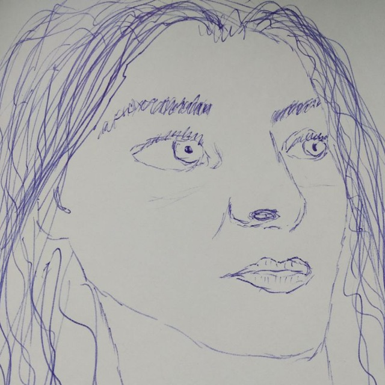
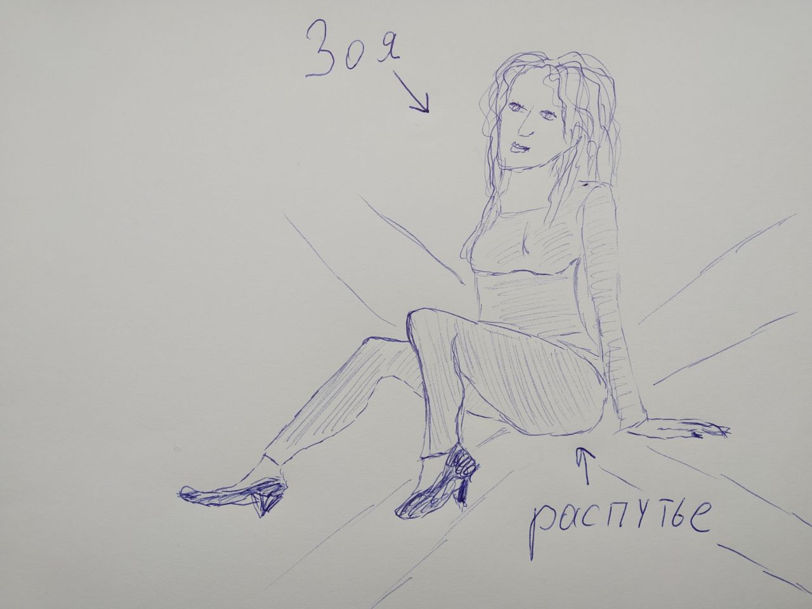
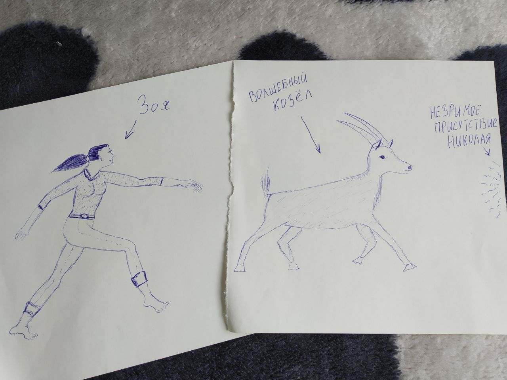

Зоина Любовь

Status: ONGOING
Зоя дышала едва-едва, сражённая нахер красотой Николая. Он стоял у перил, ветер с моря обдувал его скулы, и смотрел тревожно в тревожный красный закат. Красное солнце отражалось в его глазах, и Зоя ещё подумала тогда – как может красное отражаться в голубом? Он повернулся и посмотрел на Зою, и тут-то она и утонула в океанах его глаз.
Зоя не знала, что сказать. Да и надо ли было что-то говорить, всё ведь и так понятно. Вот она стоит перед ним, разинув рот, сражённая нахер, а в ногах у ней лежит разбитая банка солёных огурцов, которую Зоя уронила от восторга, и рассол растекается под её ступнями, лижет пяточки. Николай всё сразу понял.
- Я не хотел так вас сразить нахер, – извиняется он.
- Ах ты ж ёбаный насос какой красивый голос! – восхищается Зоя, прежде чем успевает понять, что восхищается вслух.
- Давайте я помогу вам собрать осколки, – Николай сделал шаг вперёд, от чего Зоя перепугалась и убежала, оставляя на мостовой рассольные следы.
Она тогда ещё не знала, что встретит Николая вновь.
Зоя претерпела столько изменений с той встречи с Николаем, что не сосчитать. Она поначалу пряталась и никуда не выбиралась, потому что боялась выбираться, но потом решила, что надо покушать.
В очереди за чебуреками было жарко и воняло мужским потом от потных мужиков. Зоя затравленно озиралась – нет ли где Николая, не сияют ли откуда-нибудь его ярко-голубые взоры. Тут подошла Зоина очередь; только Зоя протянула продавщице деньги за семнадцать чебуреков, как сбоку влез какой-то увалень и давай совать продавщице свои мятые купюрки за чебурек, который он уже ел.
- Тут так-то нахуй очередь, – приструнила Зоя обидчика.
Тот не смутился и так резко повернулся к Зое, что жир с его чебурека разлетелся брызгами по её лицу.
- Ты чё сказала, швабра? – грубо обратился к Зое полезший без очереди мужик. – Давай не вякай тут.
Зоя не успела задуматься о неравенстве сил в случае физического столкновения и привычно заехала мужику семнадцатью чебуреками в пакете по ебалу. Оторопев, он слегка замешкал, потом растерялся, но уже через секунду взял себя в руки, а Зою за горло.
- Убью! – кричало это чудовище, трубно и громогласно, так что очередь разбежалась, а продавщица нырнула под прилавок.
- Отпусти её! – послышался откуда-то вдруг голос, красивый как пение сирен. Зоя даже не поняла, как Николай уже стоял рядом и держал перед лицом мужика с чебуреком двустволку.
Вновь оторопев и замешкав, громила медленно разжал руку и отпустил Зою.
- То-то же, – сказал Николай, а потом ударил мужика прикладом по ебалу, ещё жирному от Зоиных чебуреков. – Будешь знать.
Николай повернулся к Зое.
- Ты в порядке?
И снова Зоя это ощутила – не могла она смотреть в эти глаза, не отводя взгляда, жжёт, как когда на солнце смотришь. И она убежала. За чебуреки не расплатилась, получается – спиздила.
Николай уже чувствовал вовсю, что это не последняя их встреча.
Зоя решила забыть Николая и сжечь все предметы, что ей о нём напоминали. Предметов не нашлось, поэтому она позвала подружек поговорить за жизнь.
- Забудь его, Зоя, мало ли мужиков у тебя будет, – советовала подружка Олеся, закусывая шпротой. – Он же инфантильный. Не ценит тебя. Козёл.
- Я тут знаю одного таксиста, золотые руки, – вклинилась подружка Оксана, вытирая рукавом майонез с щеки. – Вот такой мужик! Хочешь познакомлю?
Зоя поняла, что совершила ошибку. Не хочет она таксистов, даже с золотыми руками, а нужен ей один лишь Николай.
- Я найду его, – решительно встала Зоя. – И будь что будет.
Николай тревожно смотрел в туманную даль. Где-то его Зоя, что-то с ней происходит? Тут из туманной дали выделился силуэт, вроде человеческий, и стал стремительно приближаться. Зоя бежала как никогда, холодный ветер задувал в рот, и глаза слезились.
- Ты пришла, – не верил Николай своим глазам, когда силуэт окончательно выделился и остановился перед ним.
- Сука больно как, – Зоя упёрла руку в бок, в котором кололо, согнулась вдвое и дышала в землю, как конь после скачки.
- Тебе больно?
- Та бежала просто быстро. Я чё сказать хотела…
Тут вдалеке раздался взрыв, ударной волной понесло по улице мусор и осколки.
- Война, – догадался Николай. – Война началась. Бежим!
- Сука опять бежать?! – сокрушалась Зоя, набирая скорость.
- В укрытие! – командовал Николай.
Они побежали в сторону бункера, держа друг друга за руки, за обе, каждый, а так неудобно бегать, но это же любовь.
В бункере Зоя упала на холодный бетонный пол и пыталась отдышаться после пяти километров бега. Подтянутый Николай, кажется, вовсе не заметил пробежки, даже дыхание не сбилось. Он тревожно осматривал стены бункера, убеждаясь, что укрытие достаточно надёжно.
- Скажи, Николай, – вдруг угадала Зоя имя Николая. Ведь она не знала его имени, а просто угадала, потому что судьба. – Скажи, Николай, а надолго война?
- Не бойся, Зоя, – угадал в свою очередь Николай. – Война не будет препятствием нашей любви, ведь она выше её!
- Ах как ты сука складно говоришь, – восхитилась Зоя. – Кто кого там выше?
Тут бомба попала прямо в бункер, посыпалась штукатурка, Николай крепко прижал Зою к себе, чтобы та не испачкалась штукатуркой.
- Зоя, я выйду посмотреть что там, на поверхности, а ты оставайся здесь, и не открывай дверь врагам! – смело заявил Николай.
- Там бомбы блять что там, – рассудила Зоя, но разве остановишь мужика, когда он что-то смело там решил.
Николай полез через люк наверх своим крепким станом, а Зоя осталась в бункере ждать.
И страшно было Зое в тот момент, и радостно. Весь холодный бетон бункера не мог остудить её счастья, что Николай теперь с нею. Только вот снаружи послышались вновь взрывы, и не знала уже Зоя, вернётся ли Николай в назначенный час.
- А вы точно не враги? – кричала Зоя повстанцам по ту сторону люка, пытаясь убедиться, что они не враги, ведь Николай не велел открывать врагам.
- Открывай люк, дура! – кричали повстанцы. – Нас щас тут порешают.
- Я не дура, – обиделась Зоя. – Занято тут, идите нахер. – И Зоя весело поскакала к противоположной стене, к шкафу с консервами, потому что проголодалась, напевая какую-то военную песню. Повстанцев наверху тем временем враги усердно брали в плен, а так им и надо, нехер женщину дурой называть, они же не знают её даже.
Хорошо жилось Зое в бункере, консервы там, тушёночка шести разных вкусов, вот только одиноко. Минуты не проходило, чтобы Зоя не думала о Николае. Цел ли он, не помяли ли враги его крепкий стан?
Кто-то постучался в люк бункера условным стуком. Зоя насторожилась, потому что бдительная.
- Кто там?
- Зоя? Откройте, мы от Николая.
Сладким мёдом раздалось для Зои имя любимого. Она тут же распахнула люк, холодный ветер окатил её холодной же волной, её волосы и одежды неистово заколыхались от ветра.
Огромный мужик со шрамом на лице – предводитель группы повстанцев – спустился в бункер, а за ним предводимая им группа. Все они были суровые, мускулистые, и пахли порохом и баррикадами.
- «Как война изменила их», – подумала Зоя. Что странно, ведь она не знала их до войны.
- Наш славный лидер, Николай Неуязвимый, погиб, – перешёл к сути дела предводитель повстанцев.
В тишине бункера тихо треснуло, разбившись, Зоино сердечко.
- Он завещал нам найти вас, чтобы вы возглавили сопротивление.
Зоя не дышала, представляя, как навсегда закрылись эти два сапфировых глаза.
- Он храбро сражался, – вымолвила наконец она, хотя откуда бы ей знать.
- На самом деле нет, он поскользнулся на сопле на дамбе и упал в реку, а потом лососи… – начал было объяснять огромный мужик.
- Довольно! – прервала его Зоя решительным жестом. – Смерть Николая не была напрасной. Я поведу вас к победе. Выдвигаемся на рассвете. – Она решительно полезла через люк наверх.
– Куда выдвигаемся? – спросил ошарашенно один повстанец у другого, перед тем как последовать за их новой предводительницей, но разбираться времени не было, Зоя всё уже решила.
Врагам Зоя, понятное дело, не оставляла ни единого шанса. Она сражалась как львица, как разъярённая бизониха, ломала вражеские автоматы голыми руками, не дожидаясь рассвета, когда планировала выдвигаться. Солдаты бежали от неё, как напуганные дети, так что другим повстанцам не оставалось почти работы, они стояли и недоумённо смотрели на Зоин неизбывный гнев. «За Николая», только и думала она.
Вечером в лагере повстанцев Зоя победоносно пила водку.
- Вот ты говоришь: ну красивый был мужик, ну и что? – обратилась она к юному пыльному повстанцу, который кротко жевал хлеб с маслом и вовсе ничего до этого не говорил. – А вот нихуя там! Не просто красивый, а красивее чем… чем… чем закат. – Зоя разыкалась и запила икоту водкой. – А какой он добрый был, какой вежливый. «Пожалуйста» говорил, там, «ах что вы», «отнюдь» всякие, не что бля быдло какое.
Горько было на душе у Зои, горько, как водка, которую она глушила. Вот только не могло это вернуть Николая к жизни.
- Скажи, цыганка, – обратилась вдруг Зоя в угол. В углу как раз сидела цыганка, отбитая повстанцами у врагов, что хорошо, а то обращение Зои было бы неуместным. – Будет ли в моей жизни другой такой, прекрасный, как Адонис, и мудрый, как Хирон?
Пьяная Зоя обнаруживала неожиданные познания.
Цыганка жаркой тенью приблизилась к Зое, разжала Зоины пальцы, сжатые вокруг куска сала, которым Зоя закусывала водку, отёрла платком с ладони жир, и долго всматривалась в линии, ложбинки и бугорки, водила по ним костлявым узловатым пальцем.
- Вижу: другой мужчина – высокий, стройный, умный, очаровательный, такой, что рядом с ним ты будешь чувствовать себя царицей – тебе не светит, – хрипела цыганка. – Но светит тот же. – Она подняла на Зою свои чёрные страшные глаза. – Николай жив.
Вдребезги разбилась уроненная Зоей бутылка водки. В тишине лагеря Зоино сердечко склеилось обратно.
Тут цыганка неуклюже убежала, а Зоя, в одночасье протрезвев, стала судорожно думать, как теперь найти ей Николая.
Света обычно не ездила с незнакомыми мужиками в лес на шашлыки, но мужики уж больно настаивали.
- Была не была, – сказала себе Света. – Хоть шашлыков поем. – И положила в сумочку чистые трусы.
На природе было тухло, незнакомые мужики молча нанизывали мясо. Темнело. Света уже было испугалась, что они и вправду приехали сюда, в глухой лес на берег грязной реки, чтобы просто мясо есть.
- А давайте голыми купаться! – разрядила Света обстановку и быстро выскользнула из лосин. Под растерянными взглядами незнакомых мужиков она побежала к берегу весёлой рысью, надеясь, что они вот-вот присоединятся.
- Кто вообще её позвал? – спросил тихо один из мужиков другого, вытирая руки от маринада.
- Она вообще без башни, – отозвался тот. – Проходила мимо, увидела маринованное мясо, говорит: «Я быстро, только трусы возьму», и увязалась за нами. Я даже имени её не знаю.
Тут со стороны реки послышался громкий всплеск, как будто в реку уронили лошадь, и несвязный Светин мат.
- Пойдём посмотрим что там? – предложил один из мужиков.
- Не-не, мож она сама утонет, – прошептал другой.
Света тем временем пыталась выпутаться из водорослей, в которые впуталась, упав в реку. Она отрывала от себя их склизкие слоевища и материлась в сторону чего-то мягкого, обо что она споткнулась перед тем, как рухнуть в воду.
- Понакидают дряни всякой, суки, – ворчала она, а потом подошла поближе посмотреть.
У самом кромки воды, слегка омываемый волнами, лежал навзничь юноша, и не могла Света не отметить неземной его красоты. Его ровный, гранитный профиль тускло светился в лунном свете, и каждая черта его лица была полна благородного умиротворения. Об его-то изящное бедро Света и споткнулась.
Она тут же забыла про мужиков и их шашлык и решила что вот он-то, незнакомец в реке, теперь и есть её судьба. «Надеюсь, он живой», – оптимистически подумала она.
В этот момент юноша открыл глаза, и их сверкающая голубизна подкосила Свете ноги.
- Почему ты голая? – резонно спросил он, стыдливо устремляя очи долу.
От его нежного голоса у Светы опять бы подкосились ноги, но она и так уже сидела в воде жопой, поражённая глубиной голубых глаз.
- Да я вот купалася тут, – Света стыдливо прикрыла срам руками, но так, чтобы срам было по-прежнему отлично видно. – Как тебя зовут?
Юноша посмотрел вокруг, на своё тело, привстал.
- Я не помню, – сказал он дрожащим голосом. – Но я помню… девушку. Необыкновенную. Я должен её разыскать.
- Да хер с ней, зачем она тебе, – Света подползла немножко ближе. – Тоже мне богиня, прошманда она, вот что.
- Ты ведь не знаешь, о ком я…
- Забудь её, она тебя не стоит! – Света была уже совсем близко. – Пойдём заберём у мужиков шашлык, я накормлю тебя.
Прекрасный юноша положил руку на живот.
- Я и вправду немного голоден…
- Ща всё будет, – Света подняла его и повела в сторону мангала.
Света радовалась своему улову. Вот только Зоя была уже в пути.
В юности, до встречи с Николаем, Зоя была на распутье. После встречи с Николаем ей остался один лишь путь.
В юности, до встречи с Николаем, Зоя была на распутье. После встречи с Николаем ей остался один лишь путь.

Рис. 1. Зоя на распутье.
Зоя подошла к поиску потерянного возлюбленного стратегически. Итак, она знала, что он упал когда-то с дамбы в реку, но не знала, когда именно, с какой дамбы и в какую реку. «Вот в этом-то и проблема», – заключила Зоя. На этом применение стратегического подхода было завершено. Зоя пошла просить помощи у колдуньи.
Колдунья жила на зелёных вонючих болотах в шиповниковой чаще. Вокруг рыскали и выли какие-то непонятные волки, недобро ухал где-то сыч. Зоя умело орудовала мачете, прорубая себе путь всё глубже в чащу, но всё же шиповника было слишком много, и то и дело рдели новые порезы на Зоиных ногах, руках, груди, лице. Ничто не могло остановить её любви.
Колдунья вышла посмотреть, кто это там так стремительно приближается к ней сквозь заросли под бодрый свист мачете и такой же бодрый мат. Наконец из зарослей вывалилась Зоя – в и тут и там разорванном пальто, повсюду кровоточащая от мелких порезов.
Колдунья понимающе вздохнула.
- Мужик ушёл, да?
- Ничё он не ушёл, нет, – поспешила объясниться Зоя. – Он просто в реку упал, а потом лососи…
- Я могущественная волшебница, а не жди меня какое-нибудь! – огрызнулась вдруг колдунья. – Иди давай обратно отсюда нахрен.
- О великая волшебница сжалься! – Зоя упала на саднящие колени. – Не могу я без него, только о нём и грезю. Помоги мне найти его, пока другая какая-нибудь баба о нём не загрезила.
- Хорошо, но взамен… – колдунья вдруг включила свой зловещий колдунский голос, подошла ближе, угрожающе нависла над несчастной, – взамен ты отдашь мне свои прекрасные…
Она сделала паузу, внимательно осмотрела Зоины жиденькие волосы, кривые ножки, мелкие зубки.
- …Свои прекрасные… эммм… или, например, свою прекрасную… – глаза колдуньи так и метались туда-сюда по Зоиному туловищу в поисках чего-нибудь ценного.
- …Свою… свой… Э-э-э… Ладно, хрен с тобой, просто так тебе помогу.
- Ага, блять, спасибо, совсем не грубо вот это вот щас было, – тихо обиделась Зоя. – Мож я там хоть голос свой тебе отдам, как сраная русалочка?
- Не-не, нормально всё, – замахала колдунья руками. – Не то чтобы что-то не так у тебя с голосом, хороший голос, и не с таким живут, просто мне наверно не надо ничего…
- «Вот сука эта колдунья», – подумала Зоя. – Вот сука ты, – сказала она уже вслух, потому что всегда говорила что думала.
- Ладно, не обижайся. Помогу я тебе, – колдунья махнула рукой в сторону амбара, где тут же сама по себе чудом распахнулась дверь и выбежало оттуда что-то белое, пушистое и рогатое. – Это волшебный козёл. Беги, куда он скачет, он приведёт тебя к возлюбленному.
- Ещё за одним козлом бежать? – пошутила Зоя и посмеялась своей шутке. Колдунья подумала, что надо было забрать у Зои чувство юмора, отменное же.
Козёл резво затрусил на север, и Зоя кинулась за ним следом. Грустно посмотрела вслед ей колдунья, потому что знала точно, в чьи лапы угодил Николай – колдунья знала, кем работает Света.

Рис. 2. Зоя в погоне за волшебным козлом.
- Слышишь ты, жирный хмырь! – кричала Света из водительского окна троллейбуса. – Я тебе твоей лехус знаешь куда затолкаю? Ты как ездишь? Ты каким местом на этот лехус зарабатывал?
- Светлана, трогайтесь, пожалуйста, уже давно зелёный горит, – тихо попросила из угла водительской кабины инспектор. – Не стоит препираться с другими участниками дорожного движения.
- Ага, не стоит препираться, он же тогда опять меня подрежет, падла. Ща поедем.
Света тронулась. У неё был тяжёлый, полный стресса день, она очень нервничала. Утром из управления прислали инспектора оценить качество Светиной работы, и теперь эта маленькая женщина вжалась в угол водительской кабины рядом со Светой, крепко вцепившись в оба поручня, и изредка комментировала Светины профессиональные навыки.
Света очень хотела произвести хорошее впечатление. Она решила проявить участие.
- А чё вы там скукожились так, Ирина Борисовна, да расслабьтесь вы уже! Нормально же едем.
- Меня зовут Елена Александровна, – скромно поправила инспектор. – Я, знаете, не хочу рассечь и вторую бровь, когда вы будете в следующий раз поворачивать.
- Да ладно вам чё вы нормально я вожу, – Света треснула инспектора ладонью по ляжке и громко расхохоталась, от чего та только больше напряглась. – Уважаемые пассажиры, – прогнусавила Света через плечо в салон, подражая громкоговорителю, – держитесь получше за поручни, если вам ебала дороги.
- Светлана, вы слишком вольно пересказываете сообщение о мерах безопасности, – заметила инспектор. – И почему оно не раздаётся из громкоговорителя в записи, как положено, а воспроизводится вами, так сказать, вживую?
- Да блин я села на него.
- На кого?
- На громкоговоритель. Он поломался.
- Но он ведь… – недоумевала инспектор, – на потолке…
- Моя личная жизнь вас не касается, – Света вновь высунулась в окно. – Слышишь ты, пешеход, я тебе ноги оторву, будешь пешеполз, ты понял меня?
Пешеход пытался что-то возразить Свете, неразборчиво.
- Хуешеходный переход! – парировала она. – Ездию где хочу!
- Светлана, осторожно, красный горит…
- Ах ты ж твою мать! – Света резко высунула руку в окно, дёрнула за верёвки, привязанные к токоприёмникам, и троллейбус остановился как вкопанный, за секунду, по салону полетели пассажиры, инспектор еле сберегла вторую бровь.
- Как вы оригинально тормозите, Светлана, – заметила она.
- Да я просто путаю всё время, Галина Олеговна, где тут газ где тормоз, а за верёвку дёрнешь – рога слетают и сто пудово остановишься. Безопасность!
- Они называются «токоприёмники», – обречённо прошептала инспектор.
- Хуёкоприёмники! – зарифмовала тут же Света и оставила на ляжке инспектора ещё один синяк. Задорно хохоча, Света полезла через окно на крышу цеплять рога обратно к проводам. Она редко бывала так дружелюбна с незнакомцами – очень уж старалась понравиться инспектору.
Немногим позже.
- Светлана, почему вы перестраиваетесь в левый ряд, тут же направо поворачивать?..
- Блин мне в магазин надо, быстро.
- Но вы тогда отклонитесь от маршрута!
- Тут близко честное слово, Надежда Осиповна. У меня просто мужик новый, хотела впечатлить его, белья купить, такого, с этими…
- Как вы справедливо заметили, ваша личная жизнь меня не касается.
- Да ладно не завидуйте. Я вам щас кстати фотку покажу.
- Светлана, осторожно! – крикнула инспектор, указывая вперёд.
Света едва успела дёрнуть снова за верёвки, троллейбус замер, по салону привычно полетели пассажиры, инспектор рассекла вторую бровь.
Света в ужасе смотрела на ту, что перегородила ей дорогу. Перед троллейбусом стояла Зоя с каменным лицом.
Пётр всегда мечтал стать водителем грузовика с капустой. Ну или по крайней мере всё пытался убедить себя в последние годы, что перевозить капусту – его призвание. Вот он спокойно едет по городу, из прицепа привычно тянет капустой, жизнь прекрасна.
На перекрёстке внимание Петра привлекла необычная сцена: перед остановившимся троллейбусом стояла женщина и напряжённо смотрела на водителя.
- Ты чего под колёса бросаешься? – кричала ей водитель, растерянно.
- Я просто бежала за волшебным козлом… – промямлила та.
Две женщины как-то тревожно вглядывались в лица друг друга, будто знали друг друга когда-то, но подзабыли. Каждая словно чувствовала в другой угрозу; они были как две паучихи, которые почувствовали угрозу, поэтому не шевелились, скрестив взоры.
- За обычными бегай, как все, – нашлась наконец водитель, что сострить, и полезла через окно на крышу чинить троллейбус. Вторая женщина побежала к тротуару.
Пётр так засмотрелся на эту сцену, что перестал смотреть на дорогу и не заметил, как откуда ни возьмись перед его грузовиком прошмыгнул какой-то белый зверь, вроде огромной собаки. Пётр, выругавшись, выкрутил руль, грузовик занесло, он упал на бок, и на дорогу высыпалась вся капуста.
Вылезши из кабины, Пётр увидел, что посреди капустной кучи стоит белый козёл и мирно жуёт кочан. Подбежала женщина, та, что за минуту до этого ругалась с водительницей троллейбуса.
- Это что ли твой козёл? Он меня чуть не убил! – кричал Пётр.
- Блин, мужик, вот нахер ты откуда-то взялся? Отвлёк своей капустой волшебного козла, и он теперь потерял след Николая!
Пётр понял, что женщина сумасшедшая, решил не связываться с ней и ушёл. Пётр был мудрым.
Зоя сидела на капустной куче, размышляя под размеренное козлиное жевание. Два дня назад она была героиней войны, а теперь вот капуста какая-то сплошная. Хоть вешайся. А главное – как теперь искать Николая?
Николай сидел в темноте пустой Светиной квартиры; Света велела никуда не уходить, дождаться её со смены, двенадцать часов всего. Амнезия мучила его: он силился вспомнить кто он, но никак не мог. Только смутно стоял перед его глазами – голубыми, как гидроксид меди, – силуэт бегущей девушки, медленно выделяющийся из тумана…
- Быть может, если я буду сильно о ней думать, она почувствует это и найдёт меня, – говорил Николай сам с собой, а ведь если посидеть в одиночестве двенадцать часов, то и куда более ебанутые идею в голову придут.
В замочной скважине кто-то зашурудил ключом – Света вернулась.
- Эй, мужик! – позвала она.
- Вовсе не стоило меня запирать; я не собирался бежать.
- Ага, поищи наивных дур, – буркнула Света, но тут же опомнилась и расплылась в сладкой улыбке. – Как прошёл твой день, милый? – промурлыкала она.
- Что значит «как»? В квартире нет еды, света и воды, делать нечего, а какой-то маньяк под окнами снял велосипедное сиденье и…
- Вот и славненько, – мурлыча, перебила Света. – Я как раз вот купила тебе чебуреков…
Молния поразила Николая – в переносном смысле. Всё вокруг увеличилось и отступило. Он вспомнил, в один миг, Зою с чебуреками в руках – как смело она отстояла свою честь перед верзилой, что хотел пролезть без очереди. «Зоя», – пронеслось в его мозгу.
- Ты чё завис? – Света помахала чебуреками перед лицом Николая.
- Между нами всё кончено, Светлана. Желаю вам найти достойного мужчину.
- Кому нам? – опешила Света, но Николай уже бежал по лестнице вниз.
Света сначала хотела впасть в уныние и поубиваться над своей покинутостью, но потом взяла грабли поувесистее и побежала следом. За любовь надо бороться, считала она.
Весь этот перекошенный любовный треугольник бегал по городу до глубокой ночи, тщась найти/догнать друг друга, когда на горизонте показался ядерный гриб. Ко всем Зоиным бедам добавился апокалипсис.
- Блять, небось зомби ещё будут, – пробубнила Зоя, накрываясь свинцовым одеялом от радиации.
Зоя стирала своё исподнее в реке, когда сзади послышался тихий, но отчётливый стон зомби.
- «Блять, опять», – подумала Зоя, сложила исподнее аккуратно на берег и повернулась.
Зомби был таким, обычным, с него свисали всякие окровавленные ошмётки, и он коряво ковылял в сторону, как он думал, добычи. Зоя не собиралась сражаться с зомби – она была хитрее.
- Ыыыыыы, – прокричала Зоя зомби. – Ыыыыыыыыы! – замахала она в его сторону руками.
Зомби остановился, подумал, наклонив голову, решил, что перед ним такой же зомби и поживиться мозгами не получится, развернулся и побрёл прочь, с досадой причитая.
- Тупые зомби, – посетовала Зоя самой себе. Потом она просушила исподнее, побив им об камни, и пошла к времянке, в которой жила.
Тяжело жить в постапокалипсис. Всюду как-то неспокойно, организованная цивилизация уничтожена, время от времени натыкаешься то на зомби, то на группки выживших людей, и непонятно кто хуже.
- Чего ты приуныла, Зоя? – спросил говорящий радиоактивный цветочек, что рос у Зои около времянки.
- А как не приуныть, цветочек? так-то конец света, – объяснила Зоя.
- Но ведь есть плюсы. Зато у тебя есть я, – цветочек радостно повилял лепестками.
- А нахер ты нужен, – вздохнула Зоя, чистя на ужин радиоактивную картошку несмотря на явный протест этой картошки.
Цветочек не обиделся. Через паузу он спросил:
- О чём думаешь, Зоя?
- О нём, – прошептала Зоя.
- Забудь его, – посоветовал цветочек. – Я не могу желать тебе встретить его теперь. Что если он стал зомби, или у него от радиации на лице выросла нога, или вовсе от него осталась лишь горстка радиоактивного пепла? Живи дальше, Зоя, забудь его.
- Никогда, – снова прошептала Зоя.
- Тогда найди его! – сказала картофелина, которую чистила Зоя. – Чего ты сидишь тут и собираешься меня жрать, если тебе надо мужика искать?! Хватит меня чистить!
- Да, беги ищи его! – подхватила другая картофелина, ещё не почищенная. – Учись, Зоя, целеполаганию у зомби. Когда зомби видит живого человека, он не отступает, он идёт напролом, он не знает душевных терзаний, он бьётся до конца, он делает своё дело! Найди своего мужика уже!
- Как же найти его теперь?.. – Зоя опустошённо смотрела в землю. План картошки удался, Зоя прекратила её чистить.
- Вот именно, бесполезно это, – лил говорящий цветочек свой яд отчаянья в Зоины уши. – Забудь его, говорю.
Зоя вдруг резко развернулась всем корпусом к цветочку.
- Вот скажи, цветочек, ты любил когда-нибудь?
Цветочек потерялся.
- Я – покрытосеменное растение, я как бы сам себе половой партнёр…
- Заебёшь, – перебила Зоя. – Любил или нет?
- Нет, – признался цветочек.
- Тогда тебе не понять!
Зоя горячо встала.
- Этот мир не закончится, пока я не найду его, – провозгласила она. Картошка ликовала, цветочек поник.
Вдалеке показалось облако пыли. Приближалась колонна байкеров.
- «Блять, опять», – подумала Зоя, прям как про зомби, потому что терпеть не могла постапокалиптических байкеров за их чванливость.
Колонна приблизилась и остановилась. Вышло вперёд что-то такое закованное в латы, внушительное, в шлеме.
- Ты человек? – спросила гора лат у Зои.
- Я блять радиоактивная картошка, – бросила Зоя, ковыряясь пальцем ноги в песке, надеясь, что байкеры отъебутся и уедут.
Человек под шлемом внимательно осмотрел Зою и подумал, наконец, что она всё-таки шутит.
- Если ты не зомби и не мутант, присоединись к нам! Мы восстановим порядок и возродим мир!
- Тоже мне мэд макс, – отчеканила Зоя. – Едьте куда ехали давайте!
Удивившись нелюдимости и агрессивности незнакомки, человек в латах снял шлем. Зоя оторопела – перед ней стояла водительница троллейбуса, который чуть не сбил Зою в день перед ядерным апокалипсисом.
- Вот чё ты выёживаешься? – спросила Света. – Поехали давай. Мы дадим тебе металлическое бикини.
Зоя представила себя в металлическом бикини, но ничего не сказала. Она подошла ближе, и тут Света тоже её узнала. Две женщины вновь ощутили друг в друге непонятную угрозу, будто что-то связывало их, чего они обе хотели, но лишь одной было суждено это что-то заполучить.
Ну или короче они просто напряглись.
- Я знаю тебя, – сказала Зоя.
- Убей её просто, чё-то она на зомби слишком похожа, – прокричал из-за Светиной спины один из байкеров.
- Пошёл ты, – возмутилась Зоя криком в ответ.
- Не хочешь – не надо, – процедила Света зловеще. – Оставайся. Посмотрим, кто найдёт его первым.
У Зои перехватило дыхание. «Его!» – прозвенело у неё в голове. «Она всё знает!» – прозвенело там же вслед.
Света тоже всё поняла. Обеим женщинам стало понятно, что они ищут одного и того же мужчину. Интуиция – великое дело.
Света надела шлем обратно и взобралась на свой мотоцикл. Колонна отъезжала, а Зоя уже бежала ей наперерез. Кто же настигнет Николая первой?
Николай брёл по разрушенному городу, думая о своём. В небоскрёбах стёкла были разбиты на каждом этаже, голые окна зияли недобро до самого неба, и всюду лежали осколки, хрустели под Николаевыми шагами. Вдали гремели выстрелы, крики, последние мародёры разграбляли последние ценности города.
- «Мир закончился», – подумал Николай. – «Да и зачем он мне, если Зоя не со мною».
Николай не ел шестнадцать дней. Не мылся и не переодевался. Он был по-прежнему красив, но красота его увядала, таяла; он стал похож на бледный призрак Николая. «Как же хочется есть», – подумал он. – «Но зачем, если Зоя не со мною».
Громоподобный хруст наполнил воздух. С севера приближалась колонна байкеров-мародёров, оставляя за собой след из пыли и разлетающихся осколков стекла. Николай замер. Предводительница колонны остановилась, слезла и вышла вперёд. Николай узнал Свету.
- Где ты сука ходишь? – небрежно обратилась Света, но тотчас же опомнилась. – Иди сюда, милый, иди, иди.
С юга тоже послышался хруст, а ещё тяжёлое дыхание и треск. Зоя херачила босиком по осколкам, оставляя кровавые следы, но не замедлялась ни на секунду. Николай не верил своим глазам. Правда ли? Любовь его нашла его, среди всего разрушенного мира. Он подался в сторону Зои.
- Э, э – возмутилась Света. – Сюда иди. У нас есть пряники…
- «Пряники», – Николай остановился. Он представил как его зубы вонзаются в сдобную смесь. Блять, как же он хотел пряник.
Зоя остановилась в двадцати шагах от Николая, отдышалась. Они со Светой теперь стояли на одинаковом расстоянии от него, но по разные стороны. Зоя молча смотрела на Николая. Какой он всё-таки красивый, даже несмотря на то что грязный и голодный. «Люблю», – решила Зоя окончательно в который уже раз.
- У нас есть шоколадка, и пюрешка, и пирожки с капустой, – соблазняла Света. – Иди сюда, милый, я накормлю тебя.
Николай смотрел на Свету. «ПИРОЖКИ С КАПУСТОЙ!» – гремело в его мыслях. Человек ведь может и убить за них, если не ел шестнадцать дней.
Зоя молчала. Ей нечего было предложить Николаю. Вот она стоит, кровоточит из ног, грязная и голодная, как и он. Разве что любовь может предложить, но как же скажешь об этом вслух.
Николай не решался. Ему хотелось пойти к Свете, поесть, но как же Зоя тогда? «А как же пирожки?» – возражал Николаю его внутренний голос. – «Горячие, насыщенные, и жир с них каплет, течёт до локтя…»
Николай облизнулся.
- Давай, милый, иди сюда, – манила Света. – Пирожочки стынут.
Николай сделал шаг в сторону Светы. Из Зоиного глаза бесшумно потекла слеза.
- Коля, – тихо вымолвила Зоя.
Николай повернулся и сделал шаг назад, к Зое. Она же всё-таки его любовь. Надо к ней идти, подумал он.
Света поняла, что настало время переходить к главному козырю.
- У нас есть… шашлык.
Всё замерло. Николай снова повернулся к Свете. Его слюна закапала на осколки стекла под его ногами. Он уверенно пошёл в сторону Светы.
- «Неужели же ли он по расчёту выберет её, за шашлык?» – подумала Зоя. Но молчала.
Николай представил шашлык. Мясную мякоть представил. Ноги несли его к Свете.
Зоя выпрямилась.
- Кокетка судит хладнокровно, а Зоя любит не шутя, – вдруг громко перефразировала Зоя Александра Пушкина.
Николай остановился как вкопанный и резко развернулся.
- Зоя, ты цитируешь Пушкина?!
Зоя и сама охуела. Откуда блять сорвалась с её уст эта переработанная цитата?
- Вся жизнь моя была залогом свиданья верного с тобой; я знаю, ты мне послан богом, до гроба ты хранитель мой... – несла громко Зоя, не ебя что она несёт.
Николай почувствовал любовь.
- Нахуй шашлык, – сказал он. Впервые в жизни, между прочим, заматерился, потому что драматический момент.
Николай уверенно зашагал к Зое.
Света вообще не понимала что происходит.
- МОЁ! – проревела она и кинулась к Николаю.
Николай протянул руки к Зое, Зоя протянула свои в ответ, они бежали друг к другу, но Света была проворной и уже неслась забрать обессилевшего Николая и уволочь. Но тут из-за угла вышла армия зомби – как всегда. Придётся забыть любовные распри и улепётывать.
(1/2)
У всех зомби острый слух, поэтому прятаться от них надо совсем неслышно, не шевелясь. Зоя, Николай и Света сидели в канализационном люке, стараясь не издавать ни шороха и надеясь, что зомби брезгливые и не полезут туда их искать. Сверху слышался неровный топот зомбоног.
- Зоя, ты не представляешь, через что я прошёл, – шептал Николай. – Война, зомби, Света – чего только не было…
- Я блять слышу всё, – прошептала Света.
- А тогда, на дамбе, как страшно мне было. Я соскользнул с дамбы и всё время, что летел, думал о тебе, Зоя, думал, что не увижу уж твоего милого лица, только об этом думал, пока не упал в воду. А потом лососи…
- Я всё равно люблю тебя, Николай, – спешным шёпотом перебила Зоя. – Я тоже только о тебе и думала всё это время.
- Пососитесь ещё, – пробормотала Света. – Жила нормально, никого не трогала, а теперь блять сижу по уши в говне, везде зомби, ещё эти два голубка воркуют, настроение портят.
- Вы найдёте ещё своё счастье, Светлана, – уверил Николай. – Просто оно – не я.
- Головка… – начала было зарифмовывать Света, но осеклась, потому что наверху скрипнула крышка люка. Все застыли.
Скрип послышался снова, громче на этот раз. Кто-то собирался вторгнуться в их убежище.
- Я буду рад умереть бок о бок с тобой, Зоя – отважно сказал Николай, смотря наверх, сжимая Зоину руку в своей.
- Да, – зачем-то согласилась Зоя. Видимо, пребывала в аффекте.
- Срочно, перемажь меня говном, может они нас не заметят! – спохватилась Света.
- Давайте встретим смерть достойно, Светлана, – предложил Николай. Крышку люка подняли и отбросили, в глаза героям ударил яркий свет.
- Есть кто живой? – раздался приятный мужской голос.
- Это не зомби! – обрадовался Николай и полез наверх. – Как вы нашли нас?!
Пока Зоя и Света, недобро смотря друг на друга, вылезали из люка, Николай разговаривал с их спасителем.
- …А так всегда бывает, – объяснял тот. – Где проходит армия зомби, там надо искать выживших в канализации. Они вечно по канализациям прячутся. Копрофилы твою мать.
- Это просто единственное возможное убежище, – оправдывался Николай, смотря в землю, пряча за спиной стыдливо перепачканные нечистотами рукава.
- А Света ещё и перемазаться говном хотела! – вклинилась Зоя и засмеялась. Света в ответ грязно выругалась в адрес Зои.
(2/2)
- Мы не просто ищем выживших, я и мои братья. Мы ищем, – незнакомец наклонился ближе и интимно прошептал, – избранных.
- Какая весёлая секта, – сказала Света без энтузиазма.
- Мы не секта! – возразил член секты. – Мы следуем пророчеству. Мир спасут люди с родимыми пятнами на пояснице. Ну, чуть пониже.
- Родимые пятна на жопе? Не, я в этом индийском кине сниматься не буду, – отчеканила Света. – Ну у меня пятно родимое на жопе, и что?
Николай и Зоя переглянулись; оба покраснели.
- У нас тоже есть родимые пятна… там, – признался Николай наконец. Когда успел рассмотреть Зоину жопу непонятно.
- Всё сходится! – всплеснул руками сектант. – В пророчестве говорилось про прекрасного мужчину и двух женщин с ним!
- А то что женщины тоже прекрасные там не говорилось? – ехидно спросила Зоя.
- Про их внешность ничего не говорилось, – смущённо ответил сектант.
- Ну и козлы же вам пророчества пишут, – негодовала Зоя. – Я конечно вся в говне сейчас, но если переоденусь в чистое, да расчешусь, скраб-хуяб там, ресницы подведу…
- Не сердись, Зоя, – успокаивал Николай. – Для меня ты самая красивая.
- Я не поняла, – не поняла Света.
- Вы тоже ничего, Светлана, – сказал Николай слегка дрогнувшим голосом. – Ума не приложу, почему в пророчестве об этом нет ни слова.
- Так, так, – замахал руками сектант. – У вас тут всё сложно, как я посмотрю, но вы должны забыть разногласия и вместе найти машину времени, чтобы вернуться в прошлое и предотвратить апокалипсис.
- Это противоречит второму закону термодинамики и гипотезе Хокинга о защищённости хронологии, – вновь обнаружила Зоя неожиданные познания.
- Пророчество истинно! – поднял сектант указательный палец. – В нём также говорилось, что одна из женщин будет произносить слова, значения которых не понимает.
- Ах ты козёл! – кинулась на него Зоя с кулаками. Николаю пришлось её оттаскивать. Света заливалась смехом.
- Идите за мной, – сказал сектант, выплюнув зуб. – У нас мало времени, – и пошёл в сторону гор.
- В смысле «мало времени»? Какая разница, сколько времени искать машину времени? – рассуждала Света вслух о парадоксах, когда они втроём волочились за сектантом. – Её же, когда найдёшь, можно вернуться назад и искать ещё дольше, если хочется, всё равно найдёшь же.
- Тоже мне Курт Гёдель, – ядовито бросила ей Зоя.
Тяжело было на душе у сектанта. Он знал, что, согласно пророчеству, после спасения мира из трёх избранных в живых останется только один. Или одна. Ну то есть он знал, кто останется в живых, но пусть будет интрига.
Света если застолбила мужика, то не отступит. Она решила вернуть Николая, поэтому не пила воду уже пятый день.
Три наших героя шли по пустыне, горячий песок жёг им ступни. У каждого было по фляжке воды в начале пути, но у Николая и Зои вода кончилась утром. Света сказала, что у неё тоже кончилась, но сама припрятала фляжку с невипытой водой в кармане. Она собиралась холодно мстить.
Николай и Зоя шли рука об руку всю дорогу. «Когда приду к власти, буду нахуй расстреливать за публичное проявление чувств», – подумала Света, идущая чуть сбоку и поодаль. Тут у Зои развязался шнурок, она наклонилась его завязать. Света поняла, что это её шанс на счастье, и подлетела к Николаю.
- Не верь ей, – прошептала она.
- Что?
- Она врёт. Она себе на уме. Она хочет вывести тебя из игры.
- Из какой игры?.. Светлана, вы перегрелись.
- Ты чё тут трёшься? – подошла Зоя, обращаясь к Свете.
- Попомни! – шепнула Света напоследок Николаю и отлетела обратно.
Ночью, когда Зоя храпом пугала пугливых пустынных ящерок, Света прошмыгнула к Зоиному пальто и засунула в карман фляжку с водой. Зоя ходила по пустыне в пальто, потому что стиль есть стиль.
На следующий день Николай и Зоя привычно шли рука об руку. Жажда убивала их, но они шли всё равно, ведь пророчество гласило, что ни не умрут пока не найдут машину времени. Они тихо перебрасывались словами любви.
- …А как мы назовём нашего шестнадцатого сына? – прошептал Николай.
- Валера, – ответила Зоя.
- Валера уже был.
- Так это же был другой Валера, – пошутила Зоя и улыбнулась.
- Обожаю твоё чувство юмора, – тоже улыбнулся Николай. Низкая планка у мужика – залог счастья.
Николай ласково прижал Зою к себе, и тут что-то забулькало. Николай недоумённо посмотрел на Зою.
- А что за блять подозрительный звук? – подскочила Света. – Что ты там прячешь в пальто? – она указала на Зоин карман.
Николай сунул руку в карман Зоиного пальто и вынул фляжку, в которой плескалась вода.
- Зоя?.. – сказал Николай озадаченно. – У тебя была вода? Я не пил со вчерашнего утра!
- А она небось посасывала воду втихую, – язвила Света. – Такая типа «я только шнурок завяжу», а сама наяривала из фляжки, когда мы тут от жажды подыхаем.
- Поверить не могу, – Николай смотрел на Зою совсем другими глазами.
- Я не… – не находила Зоя слов. – Пей, пей же! – Она подтолкнула руку Николая, в которой он держал фляжку, к его лицу.
- Уже не надо, – холодно сказал Николай. – Из принципа не стану пить. – Он бросил фляжку на обжигающий песок и пошёл в другую сторону.
- Я не знала… я честно… я не понимаю… – лепетала Зоя. А надо проверять карманы, когда по пустыне шаришься.
Света подобрала фляжку и побежала за Николаем.
- На, попей, я отобрала у неё фляжку, – говорила она, нагоняя его. – Чё воде пропадать.
Николай остановился и жадно отпил из фляжки.
- Откуда вы знали, Светлана?
- Да сразу же чувствуется, баба с говнецом, – кивнула Света в сторону Зои. – Не то что я. Всегда выручу.
- Я не прощу предательства, – гордо сказал Николай.
- Так чё, мож будем за ручки ходить? – предложила Света.
- Света, вы ведь никогда не делали мне плохого, – задумчиво сказал Николай. – Ну разве что заперли в пустой квартире как-то, и разок огрели граблями, когда я убегал от вас по городу, и ещё тогда, когда мы все убегали от зомби, вы засунули…
- Да, никогда не делала тебе плохого, – горячо уверила Света. – Забудем мелочи.
Николай долго думал.
- Думаю, мы можем попробовать ещё раз, – заключил он.
- Вот и славненько, пойдём найдём уже машину времени и перенесёмся в Сан-Тропе.
- А как же спасение мира?..
- Ты просто в Сан-Тропе не был, – Света уверенно потащила его вперёд.
Зоя была разбита. Как это она предала Николая и не заметила? Что-то тут нечисто. Она стала яростно рыть песок, чтобы делать хоть что-то, чтобы отвлечься, чтобы не расклеиться, и вдруг её пальцы уперлись во что-то твёрдое. Зоя раскидала песок в стороны и прочла надпись на люке.
«Вход в машину времени».
Пока Света распускала руки, Зоя открыла люк и приготовилась исполнить свой новый план. Она вернётся в прошлое. Но не чтобы спасти мир. А чтобы убить Свету.
Египтянин и инопланетянин сидели на берегу Нила и ели спелый инжир. За их спинами возвышалась огромная недостроенная пирамида, над которой висела летающая тарелка.
- Хорошо что вы прилетели, инопланетяне, – сказал египтянин. – Без вас мы бы никогда не построили пирамиды.
- Уруруруру, – сказал инопланетянин.
- Именно! – ответил египтянин. – В будущем все будут головы ломать! Как мы их провели, а?
- Уруруруру? – спросил инопланетянин.
- Нет, я не женат, – покраснел египтянин. – А что?
- Уруруруру, – показал инопланетянин на пальцах. Египтянин ничего не ответил и опять покраснел, потому что целомудренный был.
Тут неподалёку на землю свалился большой железный ящик, двое на берегу аж подскочили. Из ящика по очереди вывалились три громко препирающихся человека.
- Ну и где мы, твою мать? – сказала Света, вытряхивая песок из трусов.
- Надо говорить не «где мы?», а «когда мы?», ведь мы путешествуем во времени, а не в пространстве, – заметил Николай.
- Это клише, – сказала Зоя. – Так уже во всех фильмах про путешествия во времени пошутили.
- Не говорите со мной, Зоя, вы предали меня.
- Да не предавала я тебя! Я хотела вернуться во времени и всё исправить. Нахера вы полезли со мной в машину времени и начали тыкать в ней всё подряд?!
- Хер тебя знает что ты там собиралась делать, – прошипела Света.
Николай обернулся и заметил пирамиду. А как её не заметить, она же огромная.
- Кажется, мы перенеслись чуть дальше, чем планировали, – констатировал он.
- Кто вы?! – закричал египтянин. – Что за причудливый ящик? Всемогущий ли бог Гор спустил вас с небес?
- Гор-запор, – оскорбила Света чувства верующих. – Где мы вообще?
- Уруруруру, – шепнул инопланетянин на ухо египтянину.
- Приколько он урчит, – сказала Зоя. – А вот выглядит не очень. Ему бы почаще из дома выходить.
- Он прав, – сказал египтянин. – Я отведу вас к Клеопатре, пусть она решает, как с вами поступить.
- Это Древний Египет, – догадался Николай. – Давайте просто перенесёмся вперёд.
- А мне интересно, – возразила Света. – Пойдёмте посмотрим хоть на неё.
- Какая в жопу Клеопатра, – вразумила её Зоя. – Тут только пирамиды строят, до Клеопатры три тыщи лет ещё.
- Действительно, анахронизм, – сказал Николай.
- А по-русски она говорит? – спросила Света.
- Ну я же говорю, – пожал плечами египтянин.
- Тоже нестыковка, – снова сказал Николай.
Зоя подумала, что она могла бы испросить совета великой египетской царицы о том, как вернуть Николая. Клеопатра же вон целого Цезаря заарканила.
- Да, пойдёмте, – решила она. – Только все вместе.
Света наконец довытряхивала песок и надела трусы обратно.
- Я готова.
- Уруруруру, – тихо заметил инопланетянин.
- Сам быдло, – угадала Света смысл его слов и уверенно двинулась в сторону дворца.
Как опрометчиво наши героини решили идти к царице с Николаем. Отчего же не пришло им в голову, что Клеопатра захочет оставить мужика себе?
(1/2)
Одна служанка подливала царице Клеопатре в ванну тёплое молоко, другая кормила царицу виноградом, третья втирала ей в волосы миндальное масло, ещё две стояли по бокам с опахалами и опахали. Блаженная улыбка покоилась на царском лице.
- Жизнь удалась, – сказала Клеопатра.
Тут из-за колонны вышел бочком косматый горбатый евнух.
- Царица, не сидите долго в молоке, кожа сморщится. А на миндальное масло опять будут садиться мухи и засрут всё. И не велите опахать, вас же продует!
- Какой ты неприятный, – заметила Клеопатра. – Что ты хочешь вообще?
- В Египте голод, римляне просят вашей помощи, ещё к вам послы с Кипра, а ещё в вашей статуе, которая стоит на центральной площади, горожане проковыряли… – начал пальцем показывать в воздухе евнух.
- Ты видишь я моюсь? – перебила царица. – Откуда у меня вообще есть «евнух»? – повернулась она к одной из служанок. – У меня что, гарем есть?
Тут двери банной залы распахнулась, вбежала раскрасневшаяся Зоя, быстро закрыла за собой дверь и подпёрла её троном, чтобы больше никто не вошёл.
- Спасите боги! – закричал евнух и бочком убежал. «Трус», – подумала царица.
- Кто из вас Клеопатра? – поинтересовалась Зоя, подойдя к ванне.
Служанки молча переглянулись.
- Так, уровень понятен, – сказала Клеопатра и встала, сделав жест служанке подать халат. – Кле-о-пат-ра, э-то, я! – сказала она громко по слогам, чтобы до Зои дошло.
- Не глухая я, не надо орать, – слегка обиделась Зоя. – Подустала просто, тупой вопрос задала, согласна.
- Чё хотела-то?
- О великая царица! – вспомнила вдруг Зоя цель своего визита и упала на колени. – Обольстительнейшая из женщин! Научи советом, как вернуть любовь всей моей жизни?
Клеопатра призадумалась.
- Не знаю даже, – резюмировала она, поразглядывав Зою внимательно. – А он симпатичный?
- Красивый, как Йеллоустон, – опустила Зоя очи.
- Не знаю где это. Но тогда вообще всё плохо. Мож тебе обычного найти? У меня тут лишний евнух есть один… – Клеопатра посмотрела вслед ретировавшемуся евнуху.
- Мне больше никто не нужен. Не могу я без него… – грустно призналась Зоя.
(2/2)
За спиной Зои тем временем загрохотала подпёртая троном дверь.
- Отчего так дверь трещит, будто стадо быков ломится в неё? – шепнула одна служанка другой.
- Это Света, – махнула Зоя рукой. – Чё делать-то будем? Давайте побыстрее, пока она не разнесла дворец к херам.
- Я не… – Клеопатра развела руками. – Ну не знаю. Расскажи ему о своих чувствах? Будь собой? Люби его таким, какой он есть?
- Это что за блять ответы мэйл ру? – возмутилась Зоя. – Я вдоль всего ебучего Нила бежала за советом, что-нибудь нормальное можешь сказать? – Зоя огляделась вокруг, посмотрела на кувшин с тёплым молоком, на корзину с фруктами, на масла для натирания. – Может, это… маслицем меня натереть? Виноградиком там покормить, в молочке покупать?
Клеопатра посмотрела на грязные Зоины волосы.
- Нету в Египте столько коров, – решила Клеопатра. – Сделаем по-другому. Давай казним эту твою Свету и царским указом велим твоему избраннику взять тебя в жёны. Пойдёт?
- Радикально, – Зоя почесала подбородок. – Только вот она сама вас всех казнит. А по царскому указу не хочу. Не хочу силой. Хочу по любви.
- А я блять бугатти хочу, ничё же, езжу на сраной повозке, не жалуюсь, – не выдержала Клеопатра. – Хочет она!
- Будь моя воля, я бы разлюбила, – вновь кротко опустила Зоя очи.
Дверь, наконец, слетела с петель, Света ворвалась в помещение.
- Ты чё устроила? – обратилась она к Зое.
- Ого, – удивилась Клеопатра. – Этой бабе бы пирамиды строить.
- Мы уходим, – заявила Света и потащила Зою наружу, тихо шепча ей на ухо: – Ты соображаешь, что она нас тут всех казнит сейчас? Вокруг дворца куча трупов разбросана, я видела, надо срочно валить отсюда.
Николай топтался в дверях банной залы, не решаясь войти, подумал, что пусть женщины сами всё решают, между собой. Можно сказать, тряпка.
Три наших героя убежали от дворцовой стражи и уже закарабкивались в машину времени, когда туда же влезла вдруг Клеопатра. Почему она бегает быстрее дворцовой стражи непонятно, но как-то догнала их.
- Этот голубоглазый пойдёт со мной, – провозгласила Клеопатра и поцеловала Николая в самые губы, зажав в углу машины времени. Зоя, опешив, дёрнула не глядя какой-то рычаг. Всё потемнело, заискрилось, и любовный треугольник, в котором уже четверо, понёсся к новым приключеньям.
Инквизиторы тащили ведьму на костёр, а та упорно отбивалась.
- Да не ведьма я! – кричала. – Хватит пытаться меня сжечь!
- Как же не ведьма? – сказал один инквизитор, плешивый. – А почему у тебя отродясь волосы тёмные были, а сейчас побелели? Колдовство!
- Дебилы, это пероксид! – вырывалась новоиспечённая блондинка. – Отпустите, говорю!
- Всё равно сожжём, – сказал плешивый, обнажив свой кинжал и приставив его к горлу блондинки. – Не рыпайся. Это средневековая Европа, тут и не за такое сжигают.
Вспышка ослепила инквизиторов, и они попадали на землю. Очухавшись, они разглядели перед собой в дыму большой покорёженный металлический ящик, в котором громко ругались. Дверца распахнулась, из неё вылетела красивая женщина.
- Света, не надо швырять царицу, – сказал, вышедши, Николай.
- Ещё раз эта египтянка подойдёт к тебе, я её так рихтану, что будет в профиль ходить, как на картинках, – воспалилась Света.
- Я гречанка, – сказала Клеопатра, вставая и отряхиваясь.
- Тачанка! – Света обернулась к инквизиторам. – Вы кто?
- Ин… инквизиторы, – робко ответил плешивый.
- О, как раз. Давайте, пожгите вот эту дылду, она ведьма.
- Ведьма?! – заинтересовались инквизиторы.
Зоя тем временем тихо подошла к Николаю, пока Света пыталась пристроить царицу на костёр.
- Я люблю тебя.
Николай ошалело посмотрел на Зою. Чего это она вдруг, посреди всей неразберихи, говорит слова любви?
- Зоя?..
- Правда, люблю. Вся эта поебня с магией, зомби, пирамидами, я давно не понимаю, что происходит, я просто люблю тебя
Слёзы потекли по её щекам.
- Тише, – Николай приобнял Зою.
У Зои в уме промелькнуло что надо же, тупой совет Клеопатры сработал.
- …Так, у нас очень мало хвороста, – громко говорил плешивый инквизитор, – поэтому мы сожжём или тебя, – он указал на блондинку, – или тебя, – на Клеопатру, – или тебя, – на Свету.
- Меня-то за что? – удивилась Света.
- Ты появилась из ниоткуда, ты наверно тоже ведьма.
- Ну вообще логично, – вынужденно согласилась Света.
- Я сэкономлю вам хворост, – сказала Клеопатра зловеще. Дальше события развивались стремительно. Царица метнулась к плешивому, отобрала кинжал, что он всё ещё держал в руке, и пронеслась вокруг, махнув кинжалом пару раз. Так быстро сверкнула в её руке сталь, что никто не понял, что случилось.
Первой упала, с омертвевшими глазами, блондинка.
- Это чё… – начала растерянно Света, но не договорила, потому что почувствовала, что горло заливает кровь.
- Света! – опомнился Николай и ринулся к ней, успев подхватить падающее тело.
- Не грози египетской царице, – сказала Клеопатра в сторону, как будто блять в боевике, и бросила окровавленный кинжал на землю.
- Валим, – предложил плешивый, и инквизиторы поспешно разбежались.
Света пыталась сказать что-то ещё, смотрела дикими глазами то на Николая, то на Зою, будто помощи прося, но было слишком поздно. Николай сжал её руку, Зоя сжала другую, Света крепко стиснула обе их руки, дрожа. Но хватка её вдруг ослабла, дрожь прекратилась, и стало очень тихо.
(1/2)
Зоя стояла у приборной панели машины времени и испытывала смятение и дискомфорт. Смятение от всех этих кнопочек, шкал, тумблеров и рычажков, которые светились и переливались, и она не знала, куда жать. А дискомфорт от того, что Клеопатра приставила ей кинжал к горлу, Зоя чувствовала холодную сталь.
- Давай переноси меня обратно в Египет! – командовала царица, а потом посмотрела на прижавшегося к Зое Николая. – Ты будешь моим фараоном, – она послала ему воздушный поцелуй.
- Махаоном, – зарифмовал угрюмо Николай. Подцепил, видимо, эту привычку от Светы, мир её праху. – Насильно мил не будешь!
- Я тебе голову отрублю, если не будешь, – пообещала Клеопатра. Николай потёр шею. Царица умеет убеждать.
Зоя пыталась не выдать своей растерянности, вот только потела, как скакун. Если Клеопатра догадается, что Зоя не умеет управлять машиной времени, то она её прирежет тут же, за ненадобностью. Она её – это Клеопатра Зою, продолжаем.
- Чего ты виснешь? – негодовала царица, упирая кинжал плотнее в Зоин подбородок. Огрубевшая от странствий кожа треснула, по лезвию тихонько поползла струйка крови.
Николай посмотрел на Зою, потом на все это непонятные светящиеся кнопки и рычажки и понял, что конец близок.
- Зоя, ты знаешь, что дёргать?
- Давай не сейчас, – потупила Зоя взор. Тупить взор тяжело, внизу кинжал.
- Я про рычажки, – покраснел в свою очередь Николай.
- Щас я дёрну! – пригрозила царица. – Заводи давай.
Тут Зоя, словно по наитию, увидела маленькую жёлтую кнопочку внизу, за Николаем, на которой было написано «Сделать всё как было».
- «Какая нужная кнопка», – проскочила мысль у Зои, и она вмазала по кнопочке всей пятернёй. Машина времени затарахтела, чуть-чуть потарахтела, а потом перестала тарахтеть.
- Так бы сразу, – сказала царица властно, ибо иначе не умела, и распахнула дверцу. Странная картина ей предстала, совсем не похожая на Древний Египет. Какая-то странная комната, тёмная, маленькая, жарко натопленная, но сырая, и кошатиной воняет.
- Что за?.. – начала Клеопатра возмущаться, но отвлеклась на премилое зрелище. В центре комнаты в металлическом тазу красавица с косой купала маленьких котят, совсем тупеньких ещё, гладила их и смывала с носиков пенку.
- Какие милые котятки, – восхитилась Клеопатра и подошла поближе. Она же всё-таки с Египта, там все любят кошек.
Красавица будто совсем не удивилась появлению машины времени. Она грациозно встала, Клеопатра перевела на неё взгляд с котят.
- Погоди-ка… – прищурилась царица. – Я же тебя вырезала…
Николай и Зоя стояли как вкопанные. Перед ними была Света, только чистая, причёсанная, в косе, в опрятном переднике, и сладко, кротко улыбалась, чего Света никогда не делала. Ну то есть Света улыбалась, мир её праху, но не мило. И не кротко.
- Приветствую, незнакомка, – пропустила Света ремарку Клеопатры мимо ушей. – Тебе нравятся котята?
- Все любят котяток, – поплыла Клеопатра и уронила кинжал. – Смотри какие они утютюшеньки, – она потыкала пальцем в башку котёнку, от чего тот смешно захлёбывался водой, но выныривал обратно. – Можно я помою котят с тобой?
- Пойдём, я покажу тебе ещё котят, – поманила Света. – Там, в соседней комнате, мно-ого их.
- Сколько? – загорелась Клеопатра.
- Не посчитать, – манила Света сладким голосом. – Пойдём, они там… разноцветные, рыжие-нерыжие, пушистые, как… как ковёр, пушистый ковёр, тебе понравится.
- Аааааа, – предвкушала Клеопатра и пошла в приоткрытую Светой дверь. – Знала бы, никогда б тебя не вырезала, – слышался её голос из другой уже комнаты. Николай и Зоя не сводили глаз со Светы – почему она их не узнала? Тут она посмотрела на них, улыбка её сделалась жуткой, глаз блеснул, и она с треском захлопнула дверь.
(2/2)
- Голубоглазый мужик? – послышался сзади до боли знакомый хамоватый голос.
Николай обернулся как бешеный.
- Света! – вскрикнул он. – Ты жива!
Это была Света, какою они её знали – стояла в дверях, широко расставив ноги, от удивления чесала бок.
- Дрова, – зарифмовала она моментально, талантливо. – Ты чё тут делаешь? – Она перевела взгляд на Зою. – И ты тут, дылда?
- На себя посмотри, слонопотам, – хотела огрызнуться Зоя, но получилось сбивчиво, неуверенно, влажно, потому что слёзы радости о том, что Света жива, почему-то полились по щекам.
- Я думала, ты выбрал эту, – показала Света на Зою носком ботинка, чтобы обидней получилось, – и бросил меня.
- Не помню такого момента в нашей хронологии, – озадачился Николай.
- Света! – лепетала Зоя. – Мы вернулись во времени, чтобы спасти тебя от смерти, увидели, как ты моешь котят, а потом Клеопатра, царица Египта…
- Мою котят? – перебила Света. – Вы что, дебилы? – она махнула рукой в сторону металлического таза.
Только сейчас Зоя и Николай рассмотрели в темноте комнаты, что под тазом горел огонёк, вокруг лежали порезанные овощи, а рядом огромная разбухшая от влаги книга была открыта на странице с заголовком «Суп из котят».
- Что-о?.. – не верил Николай своим глазам, хотя и зомби уже видел, и Зою без одежды, чего только не видел в жизни.
- Это не я была, придурки, – объяснила Света. – Это мой злобный близнец – Грета.
Света зловеще помолчала. Чтобы все прочувствовали креатив её родителей.
- Света и Грета? – ухмыльнулась Зоя.
- Грета жрёт котят, – пожала Света плечами.
- АААА! – заорала из соседней комнаты Клеопатра. – Убери топор, больная, ты чего?.. АААА!
- Кто там у неё? – вздохнула Света.
- Царица, – шепнул Николай.
- С анчоусами пицца, – опять вздохнула Света. – Считайте нету больше царицы.
Клеопатра что-то ещё орала, в соседней комнате что-то падало, билось, звенело, грохотало.
- Почему Грета жрёт котят? – спросила Зоя.
- Что ТЫ здесь делаешь? – спросил Николай Свету.
- …И если она регулярно жрёт котят, зачем ей поваренная книга? Она не может просто уже запомнить рецепт? Как-то тупо. Притянуто за уши.
- Слишком много вопросов, – сказала Света. – Валите давайте, пока Грета не вернулась.
- Я только спасу котят! – Николай принялся выуживать маленьких животных из нагревающейся воды и складывать их в подол рубашки.
Зоя подошла к Свете.
- Я думала, ты мне враг, но поняла, что ошибалась, когда потеряла тебя. Давай дружить?
- Хороша подруга, отбила мужика, – буркнула Света.
- В смысле «отбила»? Я первая его нашла!
- Мне кажется, вы меня объективируете, – вмешался Николай, бросив через плечо, склонившись над тазом.
Света хотела зарифмовать, но осеклась. Она посмотрела на Зою. Почему он выбрал её, а её? Её, а не её – это Зою, а не Свету. Продолжаем.
Зоя выставила мизинчик, предлагая Свете помириться, как дети мирятся.
В Свете вскипел гнев. Её взбесило, как Зоя снисходительно предлагает милость, ведь ей ничего это не стоит, поскольку она находится в позиции силы. Света выразилась ёмче:
- Сука добрая! Посмотрим как ты запоёшь, – и она толкнула её в объятья незаметно подкравшейся сзади Греты.
Зоя заорала, Николай чуть не растерял всех котят, подпрыгнув. Света схватила Николая за шиворот и потащила к двери. Он пытался сопротивляться, но не мог, потому что руки заняты котятами.
- Сестра, по старой схеме – мне мужик, тебе мясо, – попрощалась Света, выходя на лестницу. Под мясом имела в виду, видимо, Зою.
На измене, Зоя не успела понять, как Грета ловко привязала её к батарее. Зою не беспокоила собственная судьба в логове кото- и возможно людоедки, она только смотрела вслед уведённому Николаю и думала что блять опять она его в который раз уже сколько можно потеряла. Когда она повернула голову, Грета уже занесла над её лицом скалку. Поваренная книга, успела заметить Зоя, теперь была открыта на странице «Суп из быдла».
- Сама быдло! – был Зоин встречный выпад, и скалка опустилась.